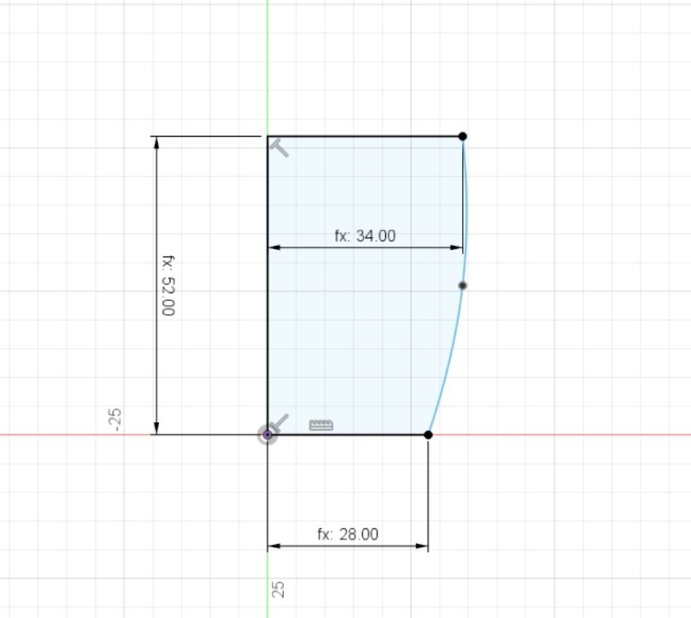
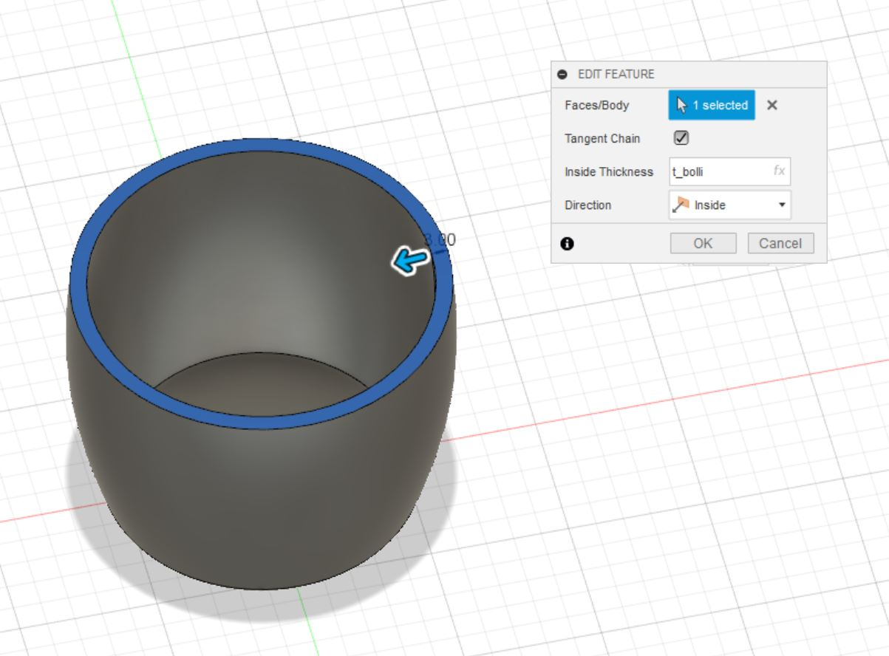
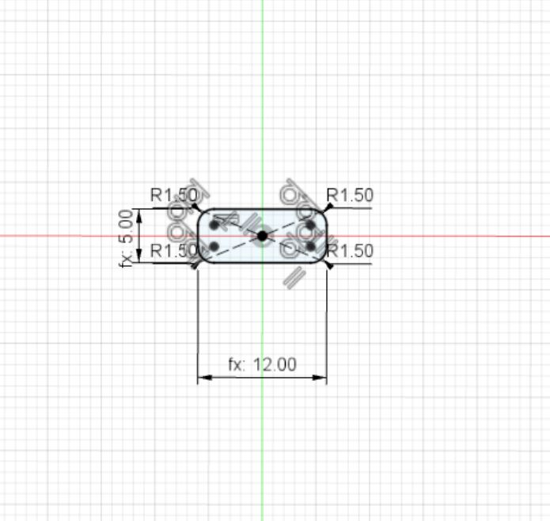
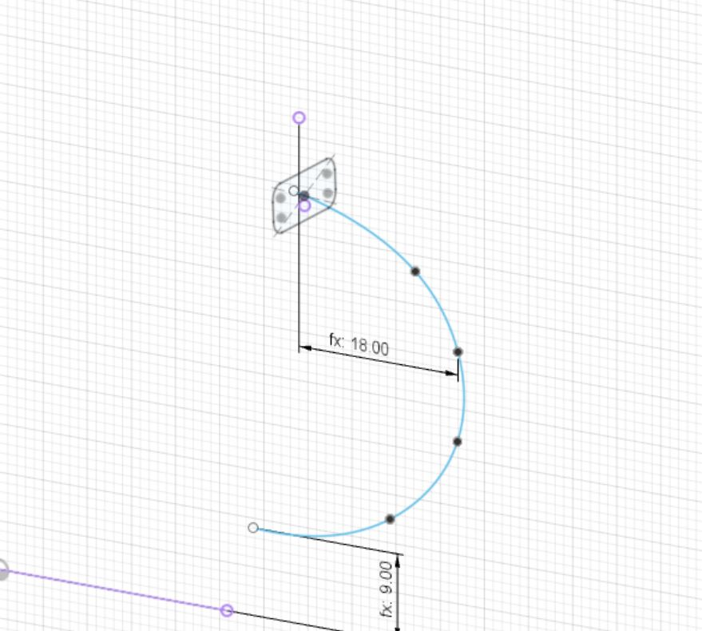
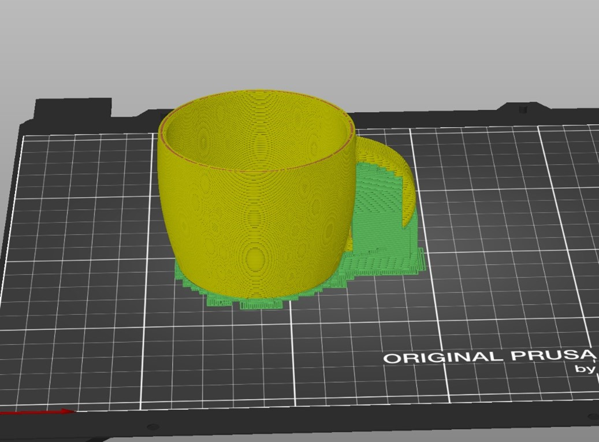
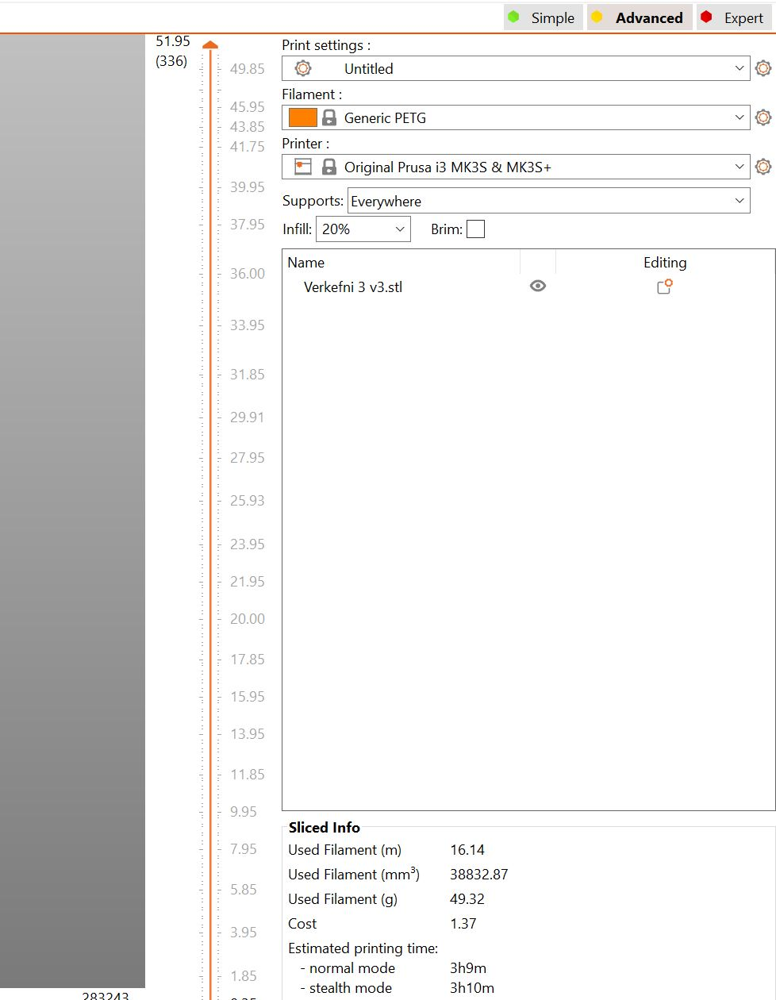
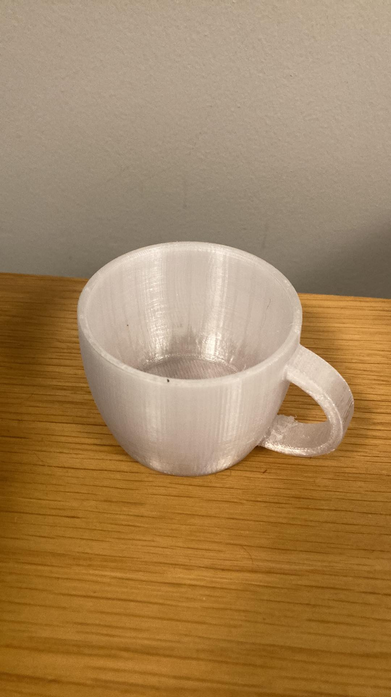

Verkefni 3
1. 3D prentaður hlutur
Hluti af kröfum verkefnis 3 var að hanna og 3D prenta hlut sem ekki er hægt að skera út með frádráttar aðferðum (e.subtracitve). Eftir stutta umhugsun, þá datt mér í hug að teikna og 3D prenta kaffibolla. Vegna lögunar bollans þá hugsa ég að það sé ekki hægt að skera hann út með frádráttar aðferðum, þannig að sú krafa ætti að vera uppfyllt. Þar sem ég hef ekkert sérstaklega mikla reynslu af teikniforritum (fyrir utan einhverja grunnþekkingu úr öðrum áföngum), þá ákvað ég að leita mér upplýsinga á netinu til þess að auðvelda mér verkið. Hönnunin byggist að miklu leyti á þessu Youtube myndbandi: Sweep tutorial
Fyrsta skrefið var að útbúa grunninn að bollanum, en ég gerði það með því að nota revolve skipunina út frá þessari teikningu:
Næsta skref var að nota shell skipunina, því annars væri bollinn bara gegnheill og því ómögulegt að drekka úr honum, sjá mynd:
Til þess að teikna handfangið byrjaði ég á því að teikna kassa og gera svo hornin "mjúk" með fillet skipuninni:
Til þess að búa til sjálft handfangið notaði ég sweep skipunina og valdi formið sem ég hafði teiknað sem "feature" og eftirfarandi feril sem "path":
Þegar þetta var komið var bollinn alveg að verða tilbúinn. Það eina sem ég átti eftir að gera var að nota fillet og chamfer skipanirnar til þess að gera allar oddhvassar brúnir mjúkar, svo það sé þægilegt að halda á bollanum og drekka úr honum. Þegar ég var búinn að því var teikningin tilbúin og leit hún svona út:
c3D prófun á PrusaSlicer og framkvæmd prentunar
Ég var ekki lengi að átta mig á því að það var eitt augljóst vandamál við þessa hönnun. Ég hafði nefnilega ásamt nokkrum samnemendum mínum prófað 3D prentarann, Prusa Slicer, til þess að kortleggja þær skorður sem eru til staðar, sérstaklega „overhang“ takmörkin, en þau eru í kringum 60-70 gráður. Eins og sjá má á myndinni fyrir ofan þá myndar handfangið klárlega meira en 80 gráðu horn miðað við lóðrétt á tveimur stöðum, uppi og niðri. En ég komst að því að það er til einföld lausn á þessu vandamáli: supports í Prusa Slicer forritunu. Prusa prentarinn prentar þá út eins konar undirstöður sem koma í veg fyrir að plast-filamentið sígi niður vegna þyngdaraflsins. Næsta mynd sýnir hvernig Prusa supports virka:
Til þess að geta notað Prusa Slicer prentarann í VR3 þá þurfti að velja viðeigandi stillingar í PrusaSlicer forritinu. Valið var "Generic PETG" plast, sem er oft notað fyrir matvæli vegna þess að það hefur verið vottað sem "food safe" vegna eiginleika sinna, sjá hér: PETG food safe.
Svo þurfti að velja réttan prentara, valið sést á næstu mynd. Einnig sést hvernig ég valdi viðeigandi stuðning við bollann undir "Supports: Everywhere". Neðst á myndinni má líka sjá að prentið tók 3 klst. og 9m. og þyngd PETG plastsins var samtals 49,32g sem er undir hámarkinu fyrir verkefnið, sem var 100g.
Þegar prentarinn hafði klárað að prenta út bollann, þá þurfti ég bara að fjarlægja stuðnings plastið og þá var hann tilbúinn til notkunar, eins og sjá má á myndinni.
Til þess að einfalda mér lífið ef ég skyldi þurfa að breyta einhverjum stærðum fyrir 3D prentið, þá notaði ég parametríska hönnun eins og ég gerði í Verkefni 2. Hér fyrir neðan má sjá breyturnar sem ég skilgreindi fyrir teikninguna í Fusion 360.

Ég hélt gróflega utan um tímann sem hver verkþáttur í verkefninu tók og hér má sjá töflu þar sem þetta er tekið saman:
3D prentaður kaffibolli
| Verkþáttur | Tími (klst) |
|---|---|
| Velja hlut | 0,5 |
| Teikna hlutinn í Fusion 360 | 5,0 |
| Gera allt klárt í PrusaSlicer forritinu | 0,5 |
| Skrifa vinnudagbók | 2,0 |
| Prenta bollann | 3,0 |
| Tími samtals | 11,0 |
2. 3D skannaður hlutur
Ég hafði aldrei áður 3D skannað hlut og hafði ekki hugmynd um hvernig ferlið virkaði. Fyrsta skrefið var því að fara á netið og finna einfalda og þægilega leið til að 3D skanna. Ég Googlaði "3D scanner apps for iPhone" og fann þessa síðu: 3D scanner apps
Ég ákvað að prófa eitt af þessum smáforritum og valdi Polycam (bekkjarfélagi minn kannaðist líka við forritið og mælti með því) og fór svo að prófa mig áfram í notkun forritsins.
Ég prófaði fyrst að 3D skanna Red Bull dós án þess að kynna mér neitt hvernig 3D skannar virka yfir höfuð, ég tók bara nokkrar myndir með Polycam og vonaðist til að skannið kæmi ágætlega út. Sú var ekki raunin. Myndin hér að neðan sýnir hversu misheppnuð fyrsta tilraun mín var:
Notkun forritsins er mjög einföld og það notar "photogrammetry". Maður tekur bara eins margar myndir og maður vill frá mismunandi sjónarhornum (reyndar er hámarkið 100 myndir fyrir ókeypis útgáfuna) og svo þarf að velja "Detail" (ég valdi Medium) og næst ýtti ég á "upload" og þá býr forritið til 3D skannaða hlutinn, sjá mynd:
Eins og myndin af Red Bull dósinni sýndi, þá kom fyrsta skannið mitt alls ekki vel út. Ég vildi gera betur þannig að ég fór á netið til að læra betur á forritið og komast að því hvaða mistök ég gerði í fyrstu tilraun. Ég fann þetta Youtube myndband: 3D scan with your iPhone
Eftir að hafa horft á myndbandið komst ég að því að helstu mistökin sem ég gerði í fyrstu tilraun var að ég tók ekki myndir frá öllum sjónarhornum, ég gleymdi til dæmis að taka myndir af toppi dósarinnar og einnig af botninum. Það er líklega þess vegna sem toppurinn og botninn komu svona illa út.
Þegar ég kom heim ákvað ég, með þessari nýju þekkingu, að reyna að gera betur. Ég tók einn af fótboltaskónum mínum og reyndi eftir bestu getu að taka góðar myndir af öllum sjónarhornum. Myndirnar voru 60 í heildina og útkoman var nokkuð góð, allavega miklu betri en í fyrstu tilraun:
Og hér er mynd af valmöguleikanum sem ég valdi til að skoða skannið betur (þetta var eini ókeypis valmöguleikinn) og þá opnast skórinn sem GLTF skrá í "3D objects" forritinu í Windows. Þar er hægt að skoða skóinn nánar.
Hér má sjá tímann sem fór í verkþætti fyrir 3D skannið:
| Verkþáttur | Tími (klst) |
|---|---|
| Horfa á fræðsluefni | 0,5 |
| 3D scan og skrifa vinnudagbók | 0,5 |
| Tími samtals | 1,0 |
Tími sem fór samtals í 3D prent og 3D skann: 12,0 klst.
- © Untitled
- Design: HTML5 UP